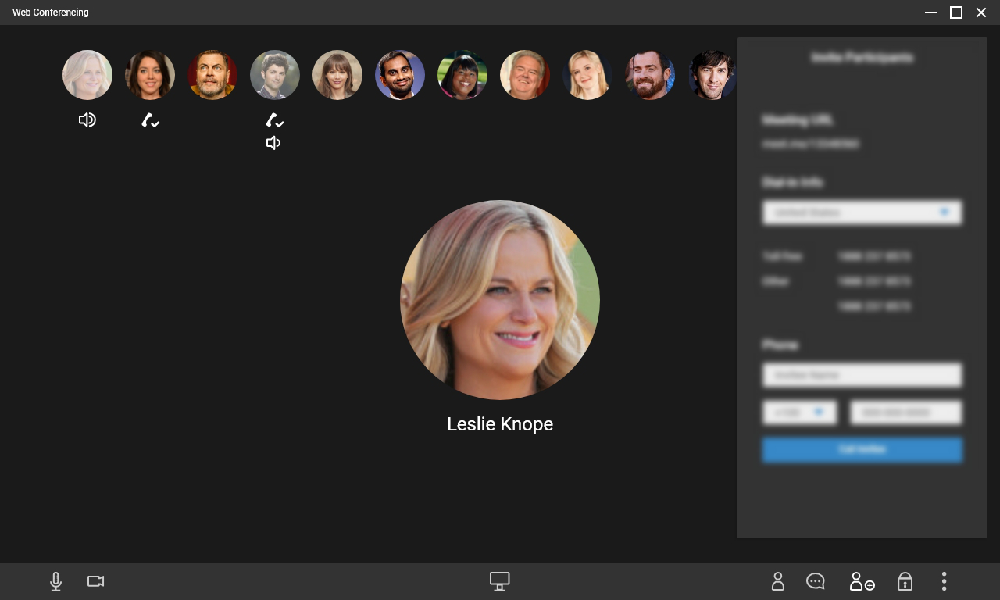

Redesigning a Conferencing Product Experience
Disclaimer: Since I worked under NDA clausules, I am not allowed to present mockups delivered to clients. However, to have something to present, I redesigned some layouts, also doing some adjustments and blurrying out sensible information.
I was recruited to lead the UX work for a project that aimed on making our customer to be in equal foot with other webRTC applications. They relied on third-party solutions to provide video-sharing capabilities, implemented in a way that provided a poor experience since you had to utilize two different services to have audio and video properly working.
Challenges
The short time available was the first factor that made this project challenging.
Our client had only a couple of months to have a new solution ready, and
to take care of transitioning their customers to it. My first concern was
thinking on how to use our time as intelligent as possible. I started gathering
requirements and information about their business, clients, and also the
pain points we should pay attention to. That helped drafting some user
stories as well.
The stakeholders were pretty adamant into offering a ‘in your face’
UI. We had to thread carefully into balancing things out since time was
precious, and there was other issues that needed attention as well. Another
challenge was designing the process of hosting and joining a meeting the
most minimalistic as possible.
Solutions
The first step was agreeing upon developing a Proof-of-Concept version
and documenting the user flows, taking special care with the ‘sign
in’ process for both hosts and participant cases. I noticed that
there were some information that wasn’t exactly required to allow
participants to join, such as e-mail, so we ended up deciding to strip
down the required credentials to the essential.
I planned to divide the home screen interface in three segments: User
details and menu, Host and Joining, and Sound/Voice quick configuration.
These are the essentials needed to setup your headset and join a meeting.
In addition, a suggested feature was the option to save frequent meetings,
so users can quickly join without requiring to input information again
and again.
The decision behind the Meeting screen was based in providing something
that should be familiar to users, since people from different backgrounds
and levels of tech savviness will utilize it. The features are displayed
in a bar placed in the bottom of the screen, while the rest of the space
is all about the meeting, the users and what they will present.

My participation ended at this point. Gladly the Designs were approved
and the customers were very satisfied with my work. That allowed them to
have enough material to pitch the project to their superiors, while the
development team could manage to start working on the Proof-of-Concept.